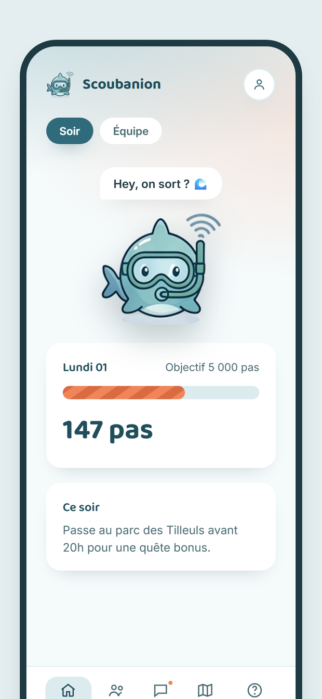

Un compagnon virtuel qui ne grandit que si l'on sort
« Il ne grandit que si toi tu sors. »
Projet
SAÉ BUT3-IoT 2026-27
Équipe
Scubatana
Membres
BANDIERAS Thomas · DALMASSO Evan KARROUCHI Hamza · LESUEUR Shaleena
Diplôme
BUT 3 Informatique
Comité directeur
E. Rochard · M.-A. Peraldi N. Ferry · J. Courtoisier
Soutenance
⟨ date ⟩
Le fil de la présentation
Dix minutes, cinq temps. Chacun répond à une question qu'un client, un
partenaire ou un financeur se poserait.
Ce qu'on raconte
La question à laquelle on répond
Durée
I
Le problème et notre réponse
Pourquoi ce projet existe, et ce qu'il est
2 min
II
Comment ça marche
Est-ce que c'est faisable, et bien conçu ?
2 min
III
Le modèle économique
Qui paie, combien, et pourquoi il accepterait
2 min 30
IV
Responsabilité et pilotage
Est-ce tenable, et est-ce maîtrisé ?
2 min
V
Où on en est, et la suite
Qu'avez-vous livré, et que reste-t-il ?
1 min 30
Le fil rouge
Chaque affirmation de cette présentation est adossée à un
document : la charte de projet, le cahier des charges, le Business Model
Canvas ou les entretiens de terrain.
Rien n'est avancé sans sa source, et ce qui
reste une hypothèse est annoncé comme telle.
Les questions viennent après. Une annexe est prévue pour y répondre avec des chiffres.
Deux maux qui se nourrissent
Le sujet imposé : comment réadapter l'homme à son environnement ?
Nous l'avons resserré sur les 18-30 ans urbains.
📉 La sédentarité
Les applications de santé mesurent et affichent. Elles produisent des
courbes que personne ne regarde.
L'abandon arrive en quelques semaines : rien n'attache.
📱 L'isolement
Les réseaux sociaux remplacent la rencontre au lieu de la provoquer.
Mille contacts, et personne à qui proposer un café à dix minutes.
Notre pari : un attachement affectif fait ce qu'un graphique de pas ne fera
jamais — et l'objet connecté doit envoyer dehors, pas retenir devant l'écran.
Un compagnon, et des bornes
🚶
Tu marches
le téléphone compte
→
🐋
Il grandit
chaque pas vaut des points
→
🗿
Une borne
chez un partenaire
→
🎩
Un objet
exclusif au lieu
L'application est gratuite et le restera : elle construit l'audience.
Ce que nous vendons, c'est du passage vérifié — un visiteur réellement
présent sur place, pas une affiche que l'on espère regardée.
Et si l'on reste chez soi, le compagnon dépérit. C'est tout le ressort.

Le moment clé : le passage en borne
Dix secondes, debout, dans un musée ou devant un restaurant.
1. On approche le téléphone, comme pour un paiement sans contact.2. La borne reconnaît le lieu et prévient le serveur.3. L'objet sort de l'œuvre et entre dans le téléphone.4. Exclusif au lieu : on ne l'obtient qu'en y étant allé.
Deux films de 15 secondes accompagnent le dossier : un musée, un restaurant partenaire.
Trois briques, une chaîne
📱
Application Android
compte les pas, affiche le compagnon, les quêtes et la carte
⇄
🖥️
Serveur
règles du jeu, contrôles anti-triche, mémoire de tout le système
⇄
🗿
Borne connectée
lit le téléphone, affiche la récompense, prévient le serveur
Une règle qui structure tout
Rien n'est calculé sur le téléphone. Un téléphone peut être trafiqué :
les pas sont plafonnés par heure et recoupés avec la position, et c'est le serveur qui
valide les quêtes et les passages.
Pourquoi la borne et pas un bracelet
C'est le seul objet que nous concevons nous-mêmes, de l'électronique
au logiciel. Et c'est lui qui crée la valeur vendable : la preuve qu'une personne
s'est déplacée.
NFC : la technologie du paiement sans contact. On approche, ça lit, rien à saisir. ·
MQTT : une façon légère de faire dialoguer des petits objets avec un serveur — la
borne « publie » un passage, le serveur lui « répond » quoi afficher. ·
Podomètre : le capteur de pas déjà présent dans tous les téléphones.
Un pivot assumé, et justifié
Pivot : changer de moyen sans changer de promesse.
Au départ
Un bracelet connecté
Lire les pas sur un bracelet du commerce, sans l'application du constructeur
Une sécurité propriétaire à contourner, sans garantie d'y arriver
Un risque lourd, placé au pire endroit : là où tout le reste attend
Et un bénéfice nul : un téléphone compte déjà les pas
Après le pivot
Le podomètre du téléphone
Plus rien à acheter pour le joueur : aucun frein à l'adoption
Un risque majeur supprimé, et deux fonctions livrées dès octobre
Tout l'objet connecté concentré sur la borne
Un objet fait à fond, plutôt que deux à moitié
Le même raisonnement a servi pour chaque choix technique : quel risque, pour quel bénéfice réel ?
Qui paie, et pourquoi
Le joueur ne paie rien d'obligatoire. 85 % du revenu visé vient des
lieux, des collectivités et des employeurs.
Offre
Prix
Ce que le client achète
Accessoires du compagnon
1,99 €
Le joueur attaché à son compagnon. La progression ne s'achète jamais.
Abonnement par borne
49 €/mois
Le lieu : du passage mesurable, et une animation qu'il n'a pas à produire
Quête sponsorisée
300 € + 0,50 € par passage
Le commerce : il ne paie une partie qu'au visiteur effectivement venu
Parcours de découverte
3 000 à 8 000 €
La collectivité : de la santé publique et du patrimoine fréquenté
Programme bien-être
3 €/mois par bénéficiaire
L'employeur ou la mutuelle, sur un budget prévention déjà existant
Trois promesses tenables : aucune publicité, aucune revente
de données, aucune progression achetable. C'est précisément ce qui nous rend acceptables
pour une collectivité ou une mutuelle.
Le prix n'a pas été décidé en réunion
Neuf personnes interrogées une par une, une échelle de dix prix, deux questions :
à partir de quel prix est-ce trop cher ? et en dessous de quel prix
doutez-vous de la qualité ?
6
0,49 €
8
0,99 €
8
1,49 €
7
1,99 €
6
2,49 €
4
2,99 €
2
3,99 €
1
4,99 €
0
6,99 €
0
9,99 €
Nombre de personnes, sur les huit de la cible,
pour qui le prix est acceptable. Au-delà de 4,99 €, le marché disparaît.
1,99 €
prix retenu
zone d'unanimité : 0,99 – 1,49 €
Deux surprises
2 personnes sur 9 ignoraient leur nombre de pas : le capteur n'était pas activé. Notre promesse repose dessus.
La question du prix plancher s'applique mal à un objet décoratif — un interrogé nous l'a fait remarquer, à raison.
Un numérique qui envoie dehors
La démarche responsable n'est pas un ajout : elle découle du produit, et elle
le contraint.
3
Bonne santé et bien-être
Remettre en mouvement une population sédentaire,
et mesurer l'effet plutôt que de l'affirmer.
11
Villes et communautés durables
Déplacements à pied, patrimoine de proximité
fréquenté, lien social à l'échelle du quartier.
12
Consommation et production responsables
Aucun objet vendu à l'utilisateur, une borne
mutualisée par lieu, réparable et avec des pièces de rechange.
♻️ Sobriété matérielle
Son téléphone suffit. Le seul matériel du système est partagé par tous
les joueurs d'un lieu.
🔒 Données minimisées
Aucun historique de position conservé, rencontres en zone approximative,
suppression du compte en deux gestes.
🎯 Attention respectée
Un produit qui prétend réduire le temps d'écran ne peut pas vivre de
l'attention qu'il capte.
Piloter, et pas seulement coder
Une charte de projet
Cadrage, périmètre, pilotage. Trois objectifs présentables à un financeur,
et un SWOT qui nomme le croisement dangereux : aucune
compétence commerciale face à un acteur installé qui copierait.
Douze risques, classés
Chaque risque est noté selon sa fréquence et sa
gravité, puis reçoit un plan préventif et un
plan correctif. Un pré-mortem complète l'exercice.
Six indicateurs
Trois d'exécution, trois d'entreprise. Chacun porte la question
« si ça décroche, qu'est-ce que je fais ? » — sinon ce n'est pas un indicateur,
c'est une statistique.
Le retour qui a le plus compté : notre première charte
décrivait un projet d'étudiants. Elle décrit maintenant l'entreprise — horizon 2028, budget
sur trois ans, risques de financement et de rétention. Le fond n'a pas changé ; la hauteur
de vue, si.
SWOT : forces et faiblesses internes, opportunités et menaces externes.
· Pré-mortem : se projeter à l'échec, et remonter aux causes avant qu'elles
n'arrivent.
Ce qui est fait, ce qui vient
sept. – oct. 2026
Cadrage
Cahier des charges, charte, modèle économique, maquettes
nov. – déc. 2026
Cœur du jeu et borne
Compagnon, quêtes, amis, prototype de borne, déploiement
5 janvier 2027
Rendu
Dépôt, documentation et preuve de concept complète
19 janvier 2027
Soutenance
Démonstration en direct des trois briques
Livré à ce jour
Connexion et profil, comptage des pas et envoi au serveur, modèle de
données, moteur de quêtes, amis, positions et carte, volet serveur des bornes,
chaîne de tests.
Le point dur, assumé
La borne physique n'est pas encore montée et porte
6 exigences sur 18. Le choix du microcontrôleur conditionne la commande du matériel.
C'est notre risque n°1, et il est écrit comme tel.
Résultats obtenus, résultats escomptés
7/18
exigences essentielles
cible : 18 au rendu
206
tests automatisés
règles du jeu et serveur
31
contributions fusionnées
relecture croisée obligatoire
9
entretiens terrain
prix validé à 1,99 €
D'ici le rendu
Les 18 exigences essentielles livrées et démontrées sans intervention manuelle
La borne montée, lisant le téléphone et dialoguant avec le serveur
Chaîne de déploiement automatique complète et supervision en place
Au-delà du projet
2 lettres d'intention de partenaires, 20 testeurs actifs
Fidélité à 30 jours mesurée — l'hypothèse centrale du modèle
Société créée et financement recherché à l'été 2027
Ce que nous retenons
Décider, puis l'écrire
Le pivot du bracelet, le prix à 1,99 €, un objectif revu à la baisse :
chaque choix est tracé avec sa raison. Une décision non écrite se re-discute
indéfiniment.
Mesurer avant d'affirmer
Le prix vient de neuf entretiens, pas d'une intuition. Et ces entretiens
ont sorti deux enseignements que nous ne cherchions pas.
Prendre de la hauteur
Le retour le plus utile a été le plus exigeant : sortir de la posture
d'étudiants et raisonner en porteurs de projet.